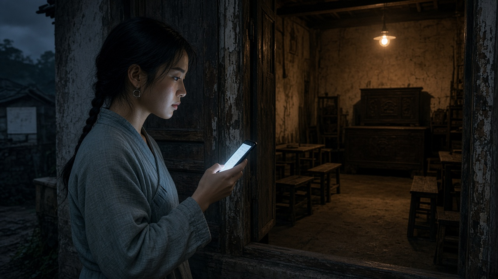

花鼓·留根（剧本与镜单）
当代长沙花鼓短片的第一集。主路是「想往外走」和「技艺留根」：村台花旦阿花答应拍最后一场夜戏，开演前被留下一页折子，上场第一句腔唱出来，监视器里像是另一个人。
剧本 v1.3 已锁定。主镜单已锁定，现为 71 镜，入表画面约 8 分 12 秒。本页不展开完整剧本和镜单全文。


当代长沙花鼓短片的第一集。主路是「想往外走」和「技艺留根」：村台花旦阿花答应拍最后一场夜戏，开演前被留下一页折子，上场第一句腔唱出来，监视器里像是另一个人。
剧本 v1.3 已锁定。主镜单已锁定，现为 71 镜，入表画面约 8 分 12 秒。本页不展开完整剧本和镜单全文。
